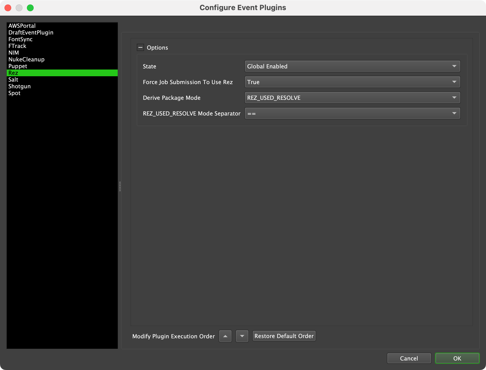

Rez¶
Overview¶
Rez is an open source cross-platform package manager capable of package configuration, build and deployment system for software. See the Academy Software Foundation’s (ASWF) Rez repository for more information.
When enabled this event plugin will attach Extra Info Key Values DEADLINE_REZ_REQUEST_PACKAGES and DEADLINE_REZ_TOOLS to a Deadline Job when submitted. If a Job has these two Extra Info Key Values then the Worker will launch the compute process with a resolved Rez context.
For example, outside of Rez a Deadline Job rendering a Blender scene may try to execute:
/usr/local/Blender/blender -b /home/<username>/cube_diorama.blend -t 0 -s 1 -e 1 -a
The same submission with this event plugin enabled, Rez would execute:
/opt/rez/bin/rez/rez-env blender-3.0+ -- blender -b /home/<username>/cube_diorama.blend -t 0 -s 1 -e 1 -a
Compatibility
The following are supported plugins:
After Effects
Arion Standalone
Arnold Standalone
Autopano Video
Blender
Cinebench
Clarisse iFX
Clarisse BUiLDER
Combustion
Command Line
Composite
Corona Standalone
Corona DR
CSiETABS
DeadlineCommand
DJV
Draft
FFmpeg
ftrack
Generation
Harmony
Hiero
Houdini
Katana
KeyShot
Lightwave
LuxRender
Mantra Standalone
Maxwell
Mental Ray Standalone
Messiah
MetaFuze
MetaRender
Mistika VR
Mocha Pro
Modo
Moho (Anime Studio)
Naiad
Natron
Nuke
Octane Standalone
Puppet
Python
REDLine
Redshift Standalone
Rendition
Rhino
RVIO
Salt
Shake
Shotgun
Silhouette
SketchUp
Terragen
TVPaint
Unreal Engine
UnrealSwarm
VRED
Vue
xNormal
Please note that following are supported with limited features:
Corona is supported except distributed rendering
Nuke is supported except Frame Server support
Unreal Engine prior to version 5 is supported
VRED is supported except VRED Cluster support
Setup¶
Prior to using Rez with Deadline you should ensure that Rez is installed and configured on your workstations and Worker machines. Deadline assumes that Rez is on your system PATH as per their standard install instructions. Once Rez is installed, the Rez event plugin can be used. To access the Rez event plugin settings, simply enter Power User mode and select Tools -> Configure Events from the Monitor’s menu. From there, select the Rez entry from the list on the left.
Options
State: There are three different states that an Event Plugin can be in: Global Enabled, Opt-In, and Disabled. In order for this feature to function properly, the State must be set to either Global Enabled or Opt-In. Note that if this plugin is in the Opt-In state, the Jobs that want to run this plugin must opt into
Rezvia Job Properties. Default:Disabled.Force Job Submission To Use Rez: If enabled, the Rez event plugin will fail all job submissions NOT made within a Rez context. If set to
False, job submission will succeed with a warning, indicating that submission was made outside a Rez context. Default:False.Derive Package Mode: This selects one of three modes, detailed below, that controls how Deadline derives packages from the Rez context. Default:
REZ_USED_RESOLVE.REZ_USED_RESOLVE Mode Separator: Package-version separator used in
REZ_USED_RESOLVEandREZ_RXT_FILEmodes; by default the used separator is==, alternative separators available are-,>,<,>=, and<=. Default:==.
The Rez event plugin operates in one of three derive package modes:
REZ_USED_REQUEST: Using this mode, if a Job is submitted from within a resolved Rez context, Deadline will attach the contents of the Rez set environment variable
REZ_USED_REQUESTto the Job as an Extra Info Key Value. The Worker will then use this value to resolve its Rez context.REZ_USED_RESOLVE: Using this mode, if a Job is submitted from within a resolved Rez context, Deadline will attach the contents of the Rez set environment variable
REZ_USED_RESOLVE; minus the implicit packages, taken fromREZ_USED_IMPLICIT_PACKAGES; to the Job as an Extra Info Key Value. The Worker will then use this value to resolve its Rez context. This mode allows you to specify a package-version separator in the Rez event plugin configuration by setting theREZ_USED_RESOLVE mode separatorparameter.REZ_RXT_FILE: Using this mode, if a Job is submitted from within a resolved Rez context, Deadline will access the current Rez context’s .rxt file pointed to by Rez set environment variable
REZ_RXT_FILE. Content from the file will be parsed to create a list of package-versions and attach that list to the Job as an Extra Info Key Value. The Worker will then use this value to resolve its Rez context.
(Step 1/4:) Job Submission
During Job submission, Deadline sets the DEADLINE_REZ_TOOLS Extra Info Key Value on the Job by running rez-context --tools as a subprocess and then parsing the output to compile a list of tools available. If Deadline cannot derive the package or tool list it will log a warning and complete the Job submission without Rez. This is done in all Rez plugin modes.
(Step: 2/4) Post Job Submission
After a Job is submitted with Rez you can view the Extra Info Key Values added from the Job properties panel. Available by double-clicking the Job in the Monitor. DEADLINE_REZ_REQUEST_PACKAGES is the list of package-versions the Worker will attempt to resolve, and DEADLINE_REZ_TOOLS is the list of tool names available in the resolved context.
(Step: 3/4) Render Plugin Configuration
To use Rez in conjunction with existing Deadline render plugins, one additional step is needed. You must add the Rez tool for the appropriate renderer to that render plugin’s executable list. For example, if you have a blender Rez package and in that package a blender tool then you will need to add the tool name to the list of Blender Executables in the Blender plugin. Render Plugin configurations can be found by entering Power User mode and selecting Tools -> Configure Plugins from the Monitor’s menu. The executable list is first checked for Rez tools so will choose a listed tool before any full executable path. If multiple Rez tools are listed, the Worker will select the first tool from DEADLINE_REZ_TOOLS found in the ordered executable list.
(Step: 4/4) Job Execution
A Worker dequeues a task for a Deadline Job, the Worker checks if this is a Rez enabled Job via the DEADLINE_REZ_TOOLS Job Extra Info key. If DEADLINE_REZ_TOOLS has a value, then the Deadline.Plugins.DeadlinePlugin.GetRenderExecutable scripting function returns the first Rez tool found in the ordered render executable list; if no Rez tool is found then it searches the executable list in order, as usual. The Worker then invokes the rez-env binary executable as a inline prefix command to the render command:
rez-env DEADLINE_REZ_REQUEST_PACKAGES -- $RENDERER $RENDER_ARGUMENTS
where rez-env will attempt to resolve a context using the Rez packages defined in the Job Extra Info value: DEADLINE_REZ_REQUEST_PACKAGES then within that context, continue to execute command $RENDERER $RENDER_ARGUMENTS and immediately exit the context after the command runs.
FAQ¶
I don’t have Rez as a tool, why is Rez listed in my DEADLINE_REZ_TOOLS?
So that the Rez CLI is available to contexts resolved by the Worker,
rezshould be included inDEADLINE_REZ_TOOLS. In all modes, Deadline will automatically addrezto the tool list if not already present.
How does Deadline know what package-versions to request?
This depends on which derive package mode is selected in the Rez event plugin options.
Mode 1: The
REZ_USED_REQUESTmode copies the request used to resolve your current context. This mode replicates the behaviour of the package versioning syntax of the Rez CLI; it copies the exact text stored in the environment variableREZ_USED_REQUESTas loose versioning.Mode 2: The
REZ_USED_RESOLVEmode copies the text stored in the environment variableREZ_USED_RESOLVEminus implicit packages fromREZ_USED_IMPLICIT_PACKAGES. It recognises the implicit packages by matching the versions of the package-versions inREZ_USED_IMPLICIT_PACKAGESto the versions listed inREZ_USED_RESOLVE. If you have the environment variables:REZ_USED_IMPLICIT_PACKAGES=C:\Users\platform==windows ~arch==AMD64 ~os==windows-10.0.19041 REZ_USED_RESOLVE=platform-windows arch-AMD64 os-windows-10.0.19041 python-3.7.12 hello_world-1.0.0then the plugin will strip those package-versions from
REZ_USED_RESOLVEthat end withwindows,AMD64, orwindows-10.0.19041leavingpython-3.7.12 hello_world-1.0.0as the string attached to the Job asDEADLINE_REZ_REQUEST_PACKAGES.Note
The plugin configuration setting: REZ_USED_RESOLVE Mode Separator will control the Rez package-version separator used such as
==.Mode 3: The
REZ_RXT_FILEmode parses an .rxt file uses the package-versions, minus the implicit packages, found therein. If the rxt file lists:{ "key": "filesystem.variant", "variables": { "index": 0, "location": "/mnt/rez/packages", "name": "numpy", "repository_type": "filesystem", "version": "1.21.6" } }then the resultant package-version requested is
numpy-1.21.6.
My workstation and my Worker require different software versions, does the Rez event plugin support this?
Yes, to accomplish this you should use
REZ_USED_REQUESTmode. It is sufficient to create a package request that resolves correctly on both your workstation and your Worker via loose versioning.
Does Deadline support a mixture of Rez enabled and disabled render plugins?
Yes. Simply do not enter any Rez tool names in the render executable list for each render plugin that you wish to remain Rez disabled or otherwise known as ‘off-pipeline’.
I have other event plugins in Deadline that execute on Job submission
You can modify the order of execution of event plugins in Deadline. Enter Power User mode and select Tools -> Configure Events from the Monitor’s menu and click and drag an event plugin name to change the order.
Does the Rez context persist after the render executable exits?
No, when invoking your chosen render executable the Deadline Worker executes the CLI equivalent of
rez-env $REZ_USED_REQUEST -- $RENDERER $RENDER_ARGUMENTSwhere$REZ_USED_REQUESTis provided by the Job Extra Info:DEADLINE_REZ_REQUEST_PACKAGES. This statement means it will attempt to resolve a context using the Rez packages defined in the Job Extra Info:DEADLINE_REZ_REQUEST_PACKAGESthen within that context, execute command$RENDERER $RENDER_ARGUMENTSand immediately exit the context after the command runs.
My custom render plugin launches multiple processes, will this work with the Rez event plugin?
Yes, although it is important to note that each
RunProcessorRunManagedprocessinvoked in your plugin will run in separate, identical Rez contexts. Each Rez context created based off the Extra Info Key ValuesDEADLINE_REZ_REQUEST_PACKAGESandDEADLINE_REZ_TOOLSattached to the Job. If you need both processes to run in the same context you should constuct a meta- Rez tool that manages launching both processes and launch that tool from your plugin.
Does the Rez event plugin support cloud based Workers?
Yes. If you wish to use the Rez event plugin with cloud based Workers you will need to configure additional infrastructure so that your Workers can reach your Rez package repositories. As latency increases, you should consider Rez
resolve cachingvia a memcache service and Rezpackage caching(copying Rez package payloads from a package repository to a local disk to speed up runtime environments) to handle latency between your origin Rez repository and your remote cloud location. Rez package caching is explained here.
Does the Rez event plugin support AWS Portal Workers?
Yes, but not out of the box. Our available Deadline AMIs do not come with Rez installed. You will need to create a custom AWS AMI that has Rez installed and configured. Additionally you will need to customize the security and network settings of your AWS Portal infrastructure to allow your Workers to reach your Rez package repositories.
Does the Rez event plugin support DeadlinePlugin.StartMonitoredProgram?
No, not at this time.
DeadlinePlugin.StartMonitoredProgramandDeadlinePlugin.StartMonitoredProgramAsUserdo not engage Rez, so processes launched using these commands will not recreate a Rez context to run within.
Does the Rez event plugin support DeadlineEventListener.RunProcess?
No, not at this time.
DeadlineEventListener.RunProcessandDeadlineEventListener.RunProcessAsUserdo not engage Rez, so processes launched using these commands will not recreate a Rez context to run within.
Which plugins are not supported?
The following plugins are not supported:
3D Studio Max
Adobe Media Encoder
Altus
AutoCAD
Cinema 4D
CSiBridge
CSiSAFE
CSiSAP2000
EnergyPlus
Episode
Fusion
Guerilla
LuxWorker
Maya
Microstation
Realflow
RenderMan
Softimage
Unreal Engine 5
Vray
Error Messages and Meanings¶
This is a collection of known Rez error messages and their meanings, as well as possible solutions. We want to keep this list as up to date as possible, so if you run into an error message that isn’t listed here, please visit the Thinkbox Help Centre and let us know.
Currently, no error messages have been reported for this event plugin.

{kind=link}
{kind=link}
{kind=link}